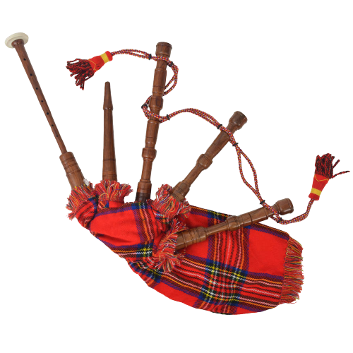

La cornemuse c'est quoi ?

Les recherches historiques récentes permettent d'affirmer que les cornemuses existent
depuis longtemps, vers environ 3000 ans avant J. -C. dans toute l'Europe. Nous pouvons alors mentionner
le Nord de l'Afrique, la Scandinavie, la Russie ou encore l'Inde.
La cornemuse possède un système de tuyaux et d'une poche permettant d'obtenir un son continu.
Le musicien gonfle la poche, en appuyant avec son coude, il génère une pression qui permet d'obtenir une mélodie avec le "chanter"
et une bulle sonore avec les différents bourdons au dessus, un peu comme si l'on appuie sur une note de piano en continu
La cornemuse possède de nombreux cousins et cousines à travers le monde et notamment le binioù, qui est son cousin breton,
le son est très différent. Le mieux est d'écouter le petit extrait juste en dessous :)